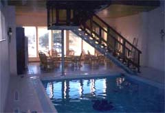
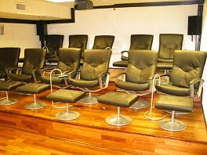

Huset har sin egen svømmehall med badstu, garderober og sittegrupper med utsikt mot sjøen og parken.
I svømmehallen finnes også eget biljardrom.
 I underetasjen finnes en liten kino. Ønsker man utendørs aktiviter har eiendommen egen tennisbane om man ikke ønsker å fiske fra brygga eller svabergene. Området byr ellers på gode turmuligheter.

Vi har småbåter med motor for utleie. Pris for en dag er kr. 400,-
Dersom man ønsker å reise ut av eiendommen, byr området på mange muligheter: .
For de golfinteresserte, finnes det 4 golfbaner innen 15 - 20 minutters kjøring. Stenungsund Golfklubb, Tjørn, Lyckorna og Kode. Alle banene er åpne fra mars til oktober / november.
Stenungsund golf klubb hjemmesiden
Lyckorna golf klubb hjemmesiden
Tjørn golf klubb hjemmesiden
Ridning
Ridning er en stor aktivitet på Vestkysten, med hester nesten på hvert eneste jorde.
Den svenske skjærgården byr på et vell av øyer og svaberg. Det er mulig å chartre en større motorbåt, havseiler eller cutter.